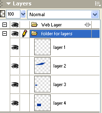

Layer Basics
How do Layers Work?
 Most advanced graphics applications organize image objects using layers. To understand
layers, picture sheets of glass that are stacked on top of each other. You
can add images or text onto each of these different sheets of glass and then
work on them separately without affecting any of the images on the other sheets
of glass. While each of the images are on a separate sheet of glass, when
you look down from above, however, all the different images on the different
sheets of glass appear as one image. The images on the top sheets of glass
appear to overlap the images on the lower sheets of glass.
Most advanced graphics applications organize image objects using layers. To understand
layers, picture sheets of glass that are stacked on top of each other. You
can add images or text onto each of these different sheets of glass and then
work on them separately without affecting any of the images on the other sheets
of glass. While each of the images are on a separate sheet of glass, when
you look down from above, however, all the different images on the different
sheets of glass appear as one image. The images on the top sheets of glass
appear to overlap the images on the lower sheets of glass.
Layers in graphics software work in this same way. Each layer is transparent and can contain different images or text. Although these layers can be worked on independently, when you look at the top view, it appears as one image. The advantage of layers is that it allows you to manipulate different components within a graphic without affecting the other layers. You can add and delete layers, apply effects to layers, move layers around, and adjust the stacking order of the layers. Layers are usually organized in some type of layers panel as shown in the example to the right.
Layer Properties
You can select individual layers by clicking on them in the layers panel. When working on your graphics, always be sure that you are on the correct layer of the image you are manipulating. It is easy to lose track of which layer you are on and then inadvertently make changes to objects on another layer.
Layers can also be renamed and organized into folders. It is a good idea to name your layers and keep them organized in folders. This is especially true in larger projects where there can be a considerable number of layers to deal with.
Layer Visibility
One other feature of layers that is nice is that you can toggle whether a layer is visible or hidden. It is common for software programs to use an eye image next to the layer to indicate that it is visible. To hide a layer, simply click the eye icon so that it disappears. Hiding layers allows you to try different things when creating a graphic and then see which one you like better without having to erase the old idea and start all over. It also is useful for creating multiple graphics of a similar nature from the same graphics file. For example, you could make a basic button shape and then create additional layers with the text for all of the different buttons you want. Instead of creating a new file for each button, simply toggle which text layer is visible and then export the graphic.